Archives avec tar
الأرشيفات باستخدام tar
الشرح بالعربية
tar تجمع الملفات في أرشيف (لا تضغط وحدها): -c إنشاء، -x استخراج، -t عرض المحتوى، -f اسم الأرشيف، -v تفصيلي، -z ضغط gzip (فتصبح -czf للإنشاء و-xzf للاستخراج)، -C للتغيير إلى مجلد الوجهة، -rf لإضافة عناصر، --delete للحذف من الأرشيف، --exclude لاستثناء نمط. أمثلة: tar -cf a.tar dir، tar -xzf a.tar.gz -C dest.
Illustrations de la leçon
16 planches · cliquez pour agrandir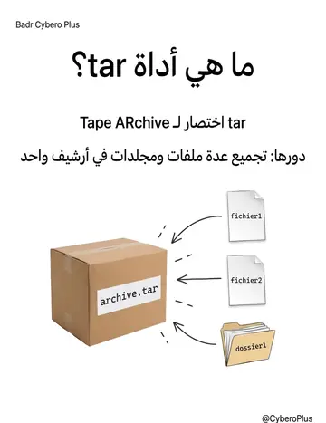
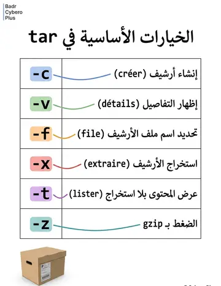
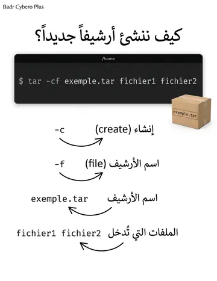
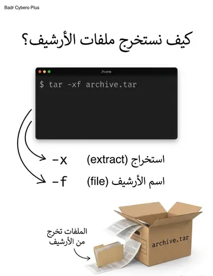
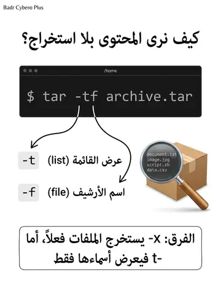
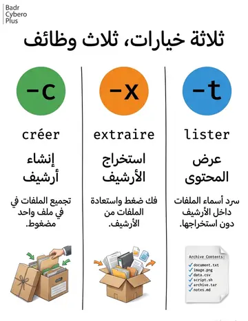
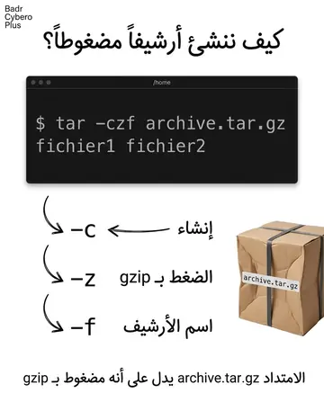
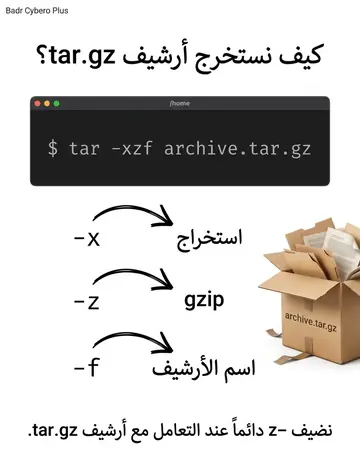
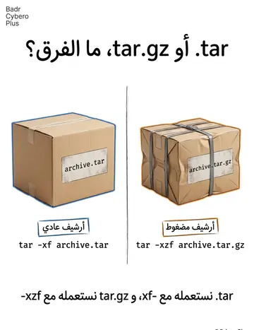
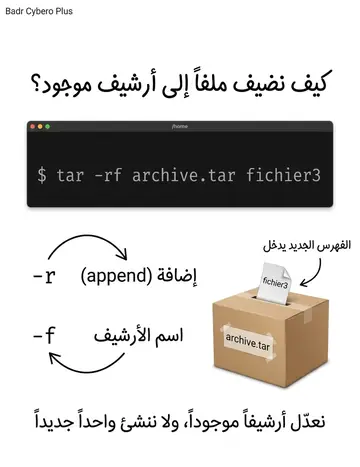
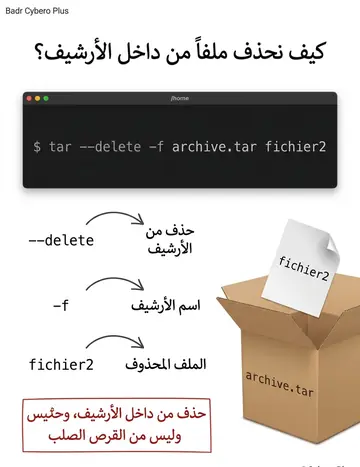
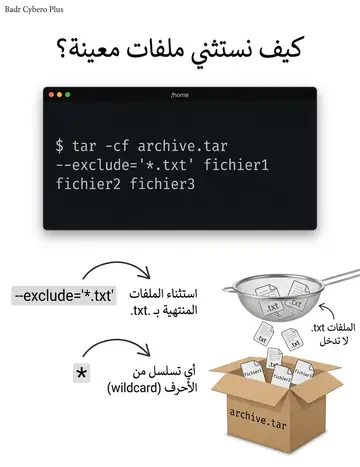
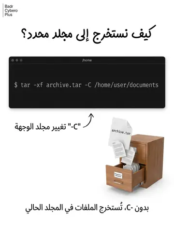
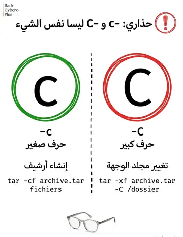
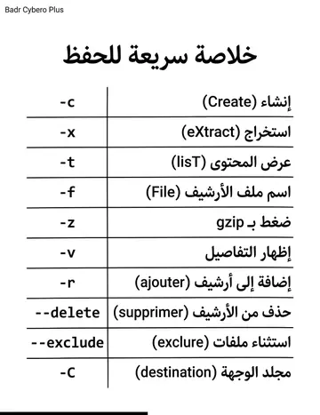
Contenu du cours
Pages 235–244 · texte intégral du support
La commande tar (Tape ARchive) :
Un outil de compression et décompression pour la gestion des archives. Il permet de regrouper plusieurs fichiers et répertoires en un seul fichier tar. Ce fichier peut ensuite être compressé à l’aide d’autres outils tels que gzip ou zip.
COMMANDE TAR : COMPRESSION ET
DÉCOMPRESSION
Option
Signification
-c
Crée une nouvelle archive.
-v
Affiche des détails sur les fichiers traités
-f
Indique le nom du fichier d'archive
-x
Extraire les fichiers d’une archive tar
-t
Afficher le contenu d’une archive tar sans l’extraire
-z
Compresser une archive tar avec gzip
Pour créer une archive tar, on utilise :
l’option -c (create) suivie de l’option -f (file) et du nom de l’archive à créer.
Exemple :
Pour créer une archive tar nommée "archive.tar" contenant les
fichiers "fichier1" et "fichier2", on utilise la commande suivante :
tar -cf exemple.tar fichier1 fichier2COMMANDE TAR : CRÉATION D’UNE
ARCHIVE TAR
Pour extraire les fichiers d’une archive tar, on utilise :
l’option -x (extract) suivie de l’option -f et du nom de l’archive à extraire.
Exemple:
pour extraire les fichiers de l’archive "archive.tar", on utilise la
commande suivante :
tar -xf archive.tarCOMMANDE TAR : EXTRACTION D’UNE
ARCHIVE
Pour afficher le contenu d’une archive tar sans l’extraire, on
utilise:
l’option -t (list) suivie de l’option -f et du nom de l’archive.
Exemple :
Pour afficher le contenu de l’archive "archive.tar", on utilise la
commande suivante :
tar -tf archive.tarCOMMANDE TAR : LISTER LE CONTENU
D’UNE ARCHIVE
La commande tar peut également être utilisée pour compresser et décompresser des fichiers à l’aide de l’algorithme gzip.
Pour compresser une archive tar avec gzip :
On ajoute l’option -z (gzip) lors de la création de l’archive.
Exemple :
Pour créer une archive tar compressée nommée "archive.tar.gz"
contenant les fichiers "fichier1" et "fichier2", on utilise la
commande suivante :
tar -czf archive.tar.gz fichier1 fichier2COMMANDE TAR : COMPRESSION ET
DÉCOMPRESSION
Pour décompresser une archive tar compressée avec gzip :
On ajoute également l’option -z lors de l’extraction de l’archive.
Exemple :
Pour extraire les fichiers de l’archive "archive.tar.gz", on utilise la
commande suivante :
tar -xzf archive.tar.gzCOMMANDE TAR : COMPRESSION ET
DÉCOMPRESSION
La commande tar permet de gérer les fichiers et répertoires inclus dans une archive, en ajoutant ou en supprimant des éléments.
Pour ajouter des fichiers ou répertoires à une archive existante, on
utilise :
l’option -r (append) suivie de l’option -f et du nom de l’archive, ainsi que des fichiers ou répertoires à ajouter.
Exemple :
Pour ajouter le fichier "fichier3" à l’archive "archive.tar", on utilise la
commande suivante :
tar -rf archive.tar fichier3COMMANDE TAR : GÉRER LES FICHIERS ET
RÉPERTOIRES
Pour supprimer un fichier d’une archive, on utilise :
l’option --delete suivie de l’option -f et du nom de l’archive, ainsi que du nom du fichier à supprimer.
Exemple:
Pour supprimer le fichier "fichier2" de l’archive "archive.tar", on
utilise la commande suivante :
tar --delete -f archive.tar fichier2COMMANDE TAR : GÉRER LES FICHIERS ET
RÉPERTOIRES
La commande tar permet également de filtrer les fichiers inclus dans une archive en fonction de critères spécifiques.
Pour cela, on utilise l’option --exclude suivie du motif à exclure.
Exemple:
Pour créer une archive tar sans les fichiers dont le nom se
termine par ".txt", on utilise la commande suivante :
tar -cf archive.tar --exclude='*.txt' fichier1 fichier2 fichier3COMMANDE TAR : FILTRAGE DES FICHIERS
Lors de l’extraction d’une archive tar, vous pouvez souhaiter changer le répertoire de destination des fichiers extraits.
Pour cela, on utilise l’option -C (change-directory) suivie du répertoire de destination.
Exemple :
Pour extraire les fichiers de l’archive "archive.tar" dans le répertoire "/home/user/documents", on utilise la commande
suivante :
tar -xf archive.tar -C /home/user/documents